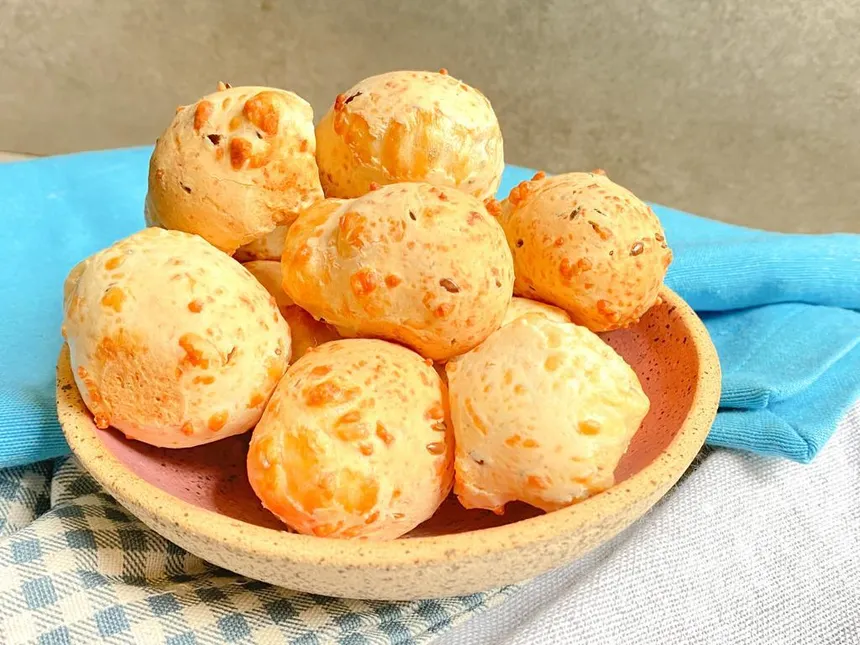

Delícias de Minas

Pão de Queijo
Jamais coloque os ovos com massa quente, senão eles cozinham e o pão não cresce!
INGREDIENTES
- 1 ovo inteiro
- 1 colher (café) de sal
- 1 xícara (chá) de leite
- 1 xícara (chá) de queijo minas meia cura ralado
- 1 xícara (chá) de polvilho azedo
PASSO A PASSO
- Em uma vasilha, misture todos os ingredientes, menos o leite.
- Em seguida, vá adicionando o leite aos poucos, até que a massa fique homogênea.
- Modele os pães e coloque-os em forma untada com óleo.
- Levar ao forno pré aquecido por 40 minutos ou até dourar.
Suas anotações
Clique aqui para adicionar as suas observações sobre como ficou a fornada...